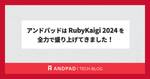
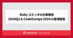
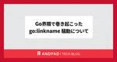
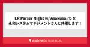

ANDPAD Tech Blog
https://tech.andpad.co.jp/
ANDPAD の開発部からのお知らせやエンジニアリングに関する話題を発信するTech Blog です。
フィード

アンドパッドは RubyKaigi 2024 を全力で盛り上げてきました！ 1
1
ANDPAD Tech Blog
こんにちは、開発本部の広報担当 id:sezemi です。 最近、小 6 の息子氏が中学のサッカークラブチーム（ J 下部ではなく街クラブ）の受験シーズンに入り、サッカークラブ行脚で忙しい毎日です。 ちなみに、クラブチームの調査には試合を観ることが手っ取り早く、練習会ではプレーをアピールするとよいことがわかりました。 この豆知識が誰かのお役に立てば。 さて、以前に hsbt が「アンドパッドは RubyKaigi 2024 を全力で盛り上げます」と、このテックブログで宣言しましたが、宣言通り、全力で盛り上げてきましたので、その模様をレポートします。 tech.andpad.co.jp ブースの…
2時間前

Ruby コミッタの仕事報告 2024Q2 & CodeEurope 2024 の登壇報告 3
ANDPAD Tech Blog
こんにちは、hsbt です。最近は原神とスターレイルに加えて鳴潮もプレイしつつ、来週ローンチする ZZZ も楽しみにしています。週末のゲームプレイの時間は良いとして、デイリークエストの消化時間が追いつかなくなりそうで困っています。 さて、今回は 6/10-11 にポーランドのクラクフで開催された CodeEurope 2024 の登壇についてカンファレンスと発表についてご紹介します。 CodeEurope 2024 の紹介と登壇までの道のり CodeEurope 2024 はポーランドで開催されている IT 技術に関するカンファレンスです。私は 2017 年にも一度登壇したことがあり、その時は…
7日前

Go界隈で巻き起こった go:linkname 騒動について 172
ANDPAD Tech Blog
お久しぶりです、ANDPADボードの tomtwinkle です。 この記事はGoの go:linkname 騒動は 6/18に行われた Go Bash で話した内容を要約したものです。 そもそも go:linkname とは何かといえば internal packageやprivate var/funcなど普通はアクセスできないオブジェクトシンボルをエイリアス出来るようCompilerに指示して、アクセス可能にするcompiler directiveです。 go:linkname はprivateな変数へアクセス可能な便利なものでしたが unsafe packageのimportを必須とする…
12日前

LR Parser Night w/ Asakusa.rb を永和システムマネジメントさんと共催します！ 1
ANDPAD Tech Blog
¡Buenos días! LR_parser_gangsメンバーの@ydahです。 RubyKaigi 2024本当に楽しかったですね。今年はLramaに新しい文法を追加することでparse.yを改善するというテーマで登壇の機会をいただきました。 お越しいただいた皆さま、また感想をいただけた皆さま、オーガナイザー、スタッフの皆さま本当にありがとうございました。 speakerdeck.com さて、 6/25(火) の19時から LR Parser Night w/ Asakusa.rb というイベントを、永和システムマネジメントさんと共催します。 開催場所はアンドパッドのコミュニティスペー…
12日前

Go Conference 2024 で登壇しました！
ANDPAD Tech Blog
こんにちは、SWEの小島です。 2024年6月8日(土)に開催されたGo Conference 2024 で「Mapのパフォーマンス向上のために検討されているSwissTableを理解する」というタイトルで登壇してきました！ Go Conference 2024 について gocon.jp Go Conference は年に1回開催されるGo言語に関するカンファレンスで2024年は久しぶりのオフラインでの開催となりました。 自分がGo Conferenceに参加し始めたのはGo Conference 2021 Springからでその時には既にオンライン開催だったので、オフラインでのGo Con…
18日前
Swiftのvarとletを科学する
ANDPAD Tech Blog
こんにちは、やまひろ (@yamahiro248) です。 最近 iOSDC 2024 で 2 本プロポーザルを出し、ドキドキしています。 ARCを「わかった気」から「完全にわかった」にする話 by やまひろ | プロポーザル | iOSDC Japan 2024 #iosdc - fortee.jp SwiftUIを用いたCRUDシステムをDDDで設計し実装してみる話 by やまひろ | プロポーザル | iOSDC Japan 2024 #iosdc - fortee.jp さて、今日は Swiftの基本中の基本であるvarとletについて、 ただの変数、定数という概念のその先の知識として…
22日前
Go Conference 2024に1名登壇 & Bronzeスポンサーとして協賛します!
ANDPAD Tech Blog
こんにちは、SWEの小島です。 2024年6月8日(土)に開催されるGo Conference 2024 にて「Mapのパフォーマンス向上のために検討されているSwissTableを理解する」というタイトルで登壇します！ 個人的には去年のGo Conference 2023・Go Conference mini 2023 Winter IN KYOTOに続き3回連続で発表する機会をいただけて嬉しく思っています。 また、アンドパッドとしてもBronzeスポンサーとして協賛します。 gocon.jp 過去の発表はこちら。 Go Conference 2023での発表 speakerdeck.com…
1ヶ月前
RubyKaigi 2024 アンドパッドブースでの Ruby アンケート結果大公開
ANDPAD Tech Blog
こんにちは hsbt です。RubyKaigi 2024 お疲れ様でした。RubyKaigi 2024 では、毎回のことですが半分以上の時間を廊下ですれ違った Rubyist と「最近どうですか」という会話をしたり、「例の件だけど」「Ruby でこういうことを考えている」というような海外から来た Rubyist と仕事の打ち合わせのようなこともやっていました。 さて、今回は RubyKaigi 2024 でアンドパッドのブースの企画として行っていたアンケートの中から Rubyist が気になるであろう項目についてご紹介します。有効回答数は設問によって異なりますが、いずれも 400 件弱という結…
1ヶ月前
Amazon Web Service 社より生成AI関連機能のハンズオンを開催いただきました！
ANDPAD Tech Blog
こんにちは！ANDPADでエンジニアをしている谷澤です。先日Amazon Web Service (以下AWS) 社より生成AI関連機能についてのプライベートなハンズオンを開催いただきました。 社外の方にも雰囲気をお伝えできればと思います。 はじめに 私が所属するデータ部は、アンドパッド社内に蓄積されたデータを活用して、継続的にビジネス価値を創出していくことを目指しています。 直近では黒板AI機能をリリースしています。 tech.andpad.co.jp 上記の他にも複数のプロジェクトが進行しており、将来皆様にお伝えできるのを楽しみにしています。 Amazon Bedrock のハンズオン ア…
1ヶ月前
ANDPADアプリのDaggerからHiltへのライブラリ移行
ANDPAD Tech Blog
こんにちは、アンドパッドで ANDPAD施工管理 アプリのプロダクトエンジニアをしています松川です。 ANDPAD施工管理アプリ（以後、施工管理アプリと言います）は依存性注入（Dependency Injection、DI）ライブラリとしてDaggerを今まで利用してきましたがHiltに移行し、ユーザ影響なく無事にリリースできました。 Daggerはとても便利ですが、よりAndroidアプリ開発のために改良されたHiltを利用することで冗長な設定ファイルをアノテーションによる自動生成に置き換えることができます。 Hiltへの移行はドキュメントを読めば大きく躓くことはありませんでしたが少し苦労し…
2ヶ月前
Ruby コミッタの仕事報告 2024Q1 & RubyConf AU 2024 に登壇しました報告
ANDPAD Tech Blog
こんにちは柴田です。RubyKaigi のスポンサーについて書いていたら、CEO からオーストラリアのことを社内に共有してほしい、という依頼が来たのでテックブログに書けば社内にも社外にも伝わって便利だなと思いエイッと書いてしまいました。こういうのは書き始めるまでが一番難易度高いのでちょうどいいきっかけでした。 というわけで、今回は 4/11-12 にオーストラリアのシドニーで開催された RubyConf AU 2024 と私の発表についてご紹介します。 RubyConf AU 登壇の経緯 RubyConf AU は Ruby Australia というオーストラリアの Ruby コミュニティが…
2ヶ月前
アンドパッドは RubyKaigi 2024 を全力で盛り上げます
ANDPAD Tech Blog
こんにちは柴田です。前回の仕事報告からしばらく空いてしまいました。今週発売する PS5 のステラーブレイドを楽しみにしながら、RubyKaigi 2024 など夏にかけて開催されるカンファレンスの発表準備と発表するための基礎となる Ruby の開発をしています。 さて、今回は 5/15-17 に開催される RubyKaigi 2024 に向けたアンドパッドの取り組みについてご紹介します。 アンドパッドのエンジニアが2名登壇します RubyKaigi 2024 には私柴田(hsbt)と高田(ydah)の2名が登壇します。 Day 1: Hiroshi SHIBATA - Long journey…
2ヶ月前
try! Swift Tokyo 2024 に参加しました
ANDPAD Tech Blog
アンドパッドの山根です。 2024年3月22日から3月24日までの3日間、try! Swift Tokyo 2024が開催されました。アンドパッドはシルバースポンサーとして協賛しました。 この記事では、参加を経て感じたことや気になったセッションについてお話しします。 会場の雰囲気 会場は渋谷駅の近くにある、ベルサール渋谷ファーストでした。初めて訪れましたが広くて綺麗な会場で驚きました。 場内は発表が行われるセッションスペースの他にスポンサーブースのスペースや休憩スペースが用意されていました。休憩スペースでは、バリスタの方が淹れたコーヒーが飲めるスペースまでありました。 ちなみに、会場で配られた…
2ヶ月前
MySQLのSQLクエリチューニングの要所を掴む勉強会を開催しました！
ANDPAD Tech Blog
こんにちは！DBREの福間（fkm_y）です。先月、弊社でデータベースの技術顧問をして頂いてる三谷（mita2）さんに開発本部向けの「MySQL SQLチューニング」勉強会を実施していただきました。 今回はMySQLの得意不得意なことの説明やSQLチューニングの流れ、具体的な事例を元にした対応例、また最近話題のHTAPな製品も紹介していただきとても参考になったのでポイントをおさえてレポートをお伝えします！ 開催背景 本編 MySQL の得意なこと、苦手なこと データベースのチューニング手段と特徴 SQLチューニングの流れ インデックス SQLチューニング例 インデックスフルスキャンとカバーリン…
2ヶ月前
顧客応対の迅速化に向けて、社内向け仕様FAQの更新通知を導入した話
ANDPAD Tech Blog
1. はじめに こんにちは、CREの池田です。昨年の11月にアンドパッドに入社し、問合せ業務に従事しています。 この記事では、入社後5カ月間で取り組んだ改善活動の一つである「社内向け仕様FAQの更新通知を導入した話」を紹介します。 2. 前提 仕様FAQとは、ANDPADの仕様について、詳細な情報まで記載している社内向けのページです。 Confluenceにまとめて社内用に公開している仕様FAQ このページは、ユーザーからの仕様確認のお問い合わせに対して、CX（カスタマーエクスペリエンス）チームやCSS（カスタマーサクセス）チームなど当社ビジネス部門が迅速に解決できるよう、CREチームが作成し…
3ヶ月前
アンチウイルスソフト Antivirus for Amazon S3 を本番環境に導入してみてわかったメリット・デメリット
ANDPAD Tech Blog
こんにちは。SREチームの吉澤です。 アンドパッドでは最近、AWSのS3バケット上のファイルをスキャンするために、アンチウイルスソフト Antivirus for Amazon S3 を本番環境に導入しました。その結果、私たちの要件はほぼ全て満たされたうえに、従来比で大幅なコスト削減を実現できました。 Antivirus for Amazon S3について日本語で書かれた記事はまだ少ないですが、S3に対するウイルススキャンが求められるケースでは、導入を検討する価値があるソフトです。 そこで、今回はこのAntivirus for Amazon S3の概要、私たちが本番環境に導入してみてわかったメ…
3ヶ月前
ML開発を通じてチーム間連携に心血を注いだ話～黒板AI作成リリースまでのあゆみ～
ANDPAD Tech Blog
はじめに データ部MLProductDevチームでML開発に取り組んでいます、森といいます。この記事では、3月21日に黒板AI作成機能をリリースしたことを受け、PoC着手からリリースに至るまでの開発経緯を振り返ってみたいと思います。 andpad.jp andpad.jp データ部はアンドパッド社内に蓄積されたデータを活用して、継続的にビジネス価値を創出していくことを目指しています。2022年は種まき期との位置づけで豆図AIキャプチャの開発・リリースを通じてAIによるプロダクト貢献を具現化してきました。2023年は発芽期との位置づけで、豆図AIキャプチャを発展させる形で開発・リリースしたのが黒…
3ヶ月前
Go 1.22 の Vet 変更点について
ANDPAD Tech Blog
こんにちは、バックエンドエンジニアをしています武山 (bushiyama) です。 ANDPADボードという稼働管理アプリのバックエンドを担当しています。 andpad.jp これはなに Go 1.22 リリースパーティにて登壇発表した内容を、実例コードを添えてあらためて起稿したものです。 当日の資料は別途こちらを参照ください。 speakerdeck.com 発表したこと Go 1.22 のお祝いということでリリースノートのTool関連から、Vet周りの更新内容について発表してきました。 おさらい まずおさらいからということで、Vetとはなにか。 pkg.go.dev 上記ドキュメント Ov…
3ヶ月前
アンドパッドは try! Swift Tokyo 2024 に協賛します！
ANDPAD Tech Blog
アンドパッドの栗山です。テックブログを担当するのは久しぶりです。 今回は try! Swift Tokyo というイベントをご紹介します。 3/22 (金) 〜 3/24 (日) の3日間の日程で、 try! Swift Tokyo 2024 が開催されます！ tryswift.jp アンドパッドは、今回 SILVER スポンサーとして協賛させていただきます！ 紹介ありがとうございます！アンドパッドは Siver スポンサーとして #tryswift Tokyo 2024 に協賛しています！参加特典バックにアンドパッドでは初となる Tech Book を入れています！ ぜひご覧ください htt…
3ヶ月前
プロダクト開発を行いながらOSS活動も緩くやる
ANDPAD Tech Blog
ANDPADボード プロダクトテックリードの土屋(tomtwinkle)です 先日CHIYODA Tech #3 にLT枠で参加してきました！ CHIYODA Techとは、千代田区にオフィスを構える企業が運営・登壇するLTイベントです。 今回は弊社9Fのイベントスペースで開催させていただきました！
4ヶ月前
Ruby 3.3 リリースパーティを STORES さんと共催し、大盛況に終わりました！ #ruby33party
ANDPAD Tech Blog
こんにちは、 id:sezemi です。 あと 3 週間ほどで入社から半年が経とうとしていて、念願の有給付与まであと少しとなりました。 待ち遠しい！ ちなみにアンドパッドには、有給付与までに 3 日間の入社時特別休暇があります。 インフルエンザやらコロナやらが流行っている中、この休暇があることで、とても助かっています。 さて、前年の 12/25 に Ruby 3.3 がリリースされました 🎉🎉🎉🎉🎉🎉 8888888 www.ruby-lang.org これを祝ってリリースパーティーを STORES さんと共催しましたので、今日はその模様をお届けします！ andpad.connpass.com…
4ヶ月前
CREがエンジニアリングで業務効率化をおこなった話 〜Datadogから異常に重いリクエスト数を自動集計〜
ANDPAD Tech Blog
こんにちは。CREの山本です。 今回はCREがエンジニアリングで業務効率化をおこなった話について書こうと思います！ 私は誰か 今回初めてブログを書きますので簡単に自己紹介させてください！ 2022年にアンドパッドへ入社し約1年半の間、ANDPAD施工管理を担当しています。 前職では自社開発のデータベースの監査アプリケーションやデータベース移行補助ツールなどのテクニカルサポートをおこなっていました。 常日頃「プロダクトと顧客」の間に立つものとして、課題に対して技術的に向き合っています。 大工一筋の父親のもとで育ちましたので、私なりに建築・建設業界の役に立ちたいとアンドパッドで充実した日々と共に業…
4ヶ月前
Ruby のメモリ使用量問題を調査し upstream で解決していただいた話
ANDPAD Tech Blog
はじめに こんにちは。リアーキテクティングチームの髙橋と申します。 この記事では、アンドパッドの施工管理サービスで利用している Ruby をバージョンアップしたときに発生したメモリ使用量の問題の発生から解決までをお話しします。 Ruby のバージョンアップ（3.0 -> 3.2） アンドパッドでは昨年 2023 に、施工管理サービスで利用している Ruby を 3.0 から 3.2 にバージョンアップしました。 バージョンアップ自体は過去に確立済みの手法（詳しくは過去記事をご参照ください）により、粛々と進められリリースされました。 ところがこのリリースから数日後、とある問題が発覚しました。 メ…
5ヶ月前
Google Chrome+QualityForwardでテストケースを多言語化
ANDPAD Tech Blog
ごあいさつ アンドパッドのQualityControlの冨士川です。 入社して2年半経過し、現在はQCチームのリーダーやっています。 道の駅をめぐることにハマっていて写真は千葉県館山市の道の駅「“渚の駅” たてやま」の「さかなクンギャラリー」で撮った写真です。魚魚魚～！ ※QualityControlについては弊社のTech Blogをお読みください この記事の目的 皆さん、海外メンバーと開発する時にテストケースの翻訳はどうしていますか？ 「Google Chrome」とテスト管理ツール「QualityForward」を組み合わせて使ったところ、 簡単にテストケースを多言語化できたのでご紹介し…
5ヶ月前
アンドパッドのデータ組織の過去・現在・未来
ANDPAD Tech Blog
はじめに こんにちは、データ部で部長をやっている土居です。 早いものでアンドパッドに入社して2年が過ぎようとしています。 体感としては前職の5年分くらいの密度のような感じがしており、今もなお刺激 で ワクワクする日々を過ごしています。 今日はアンドパッドのデータ組織の成長過程、現在の状況、そして未来に向けた話について、皆さんにもそのワクワクの一端をお伝えできればと考えています。 過去①：開墾期（〜2021年） 私は庭をいじるのが好きなので、以降は庭造りになぞらえて話をしていきたいと思います。 当社は建築・建設業界を対象としたバーティカルSaaS企業です。上流から下流にかけて、あらゆる種類のデー…
5ヶ月前
Product Engineer Night #2 に参加してきた
ANDPAD Tech Blog
こんにちは、採用広報の id:sezemi です。 アンダーニンジャ最新刊 12 巻の 2/6 リリースに備え、復習に余念のない日々を過ごしています。 でも、今でも理解ができていないところがあり、ネタバレサイトを見に行こうか悩んでいます。 さて、先月 1/17 に Product Engineer Night #2 〜 Domain への Deep Dive！〜 が開催され、アンドパッドからはテックリードであり、創業メンバーでもある 金近 歩 (@KanechikaAyumu) が登壇しました。 product-engineer.connpass.com この記事ではその模様をレポートします！…
5ヶ月前
QCは開発の中で何をする？～作るプロセスの中にいる、作らない人～
ANDPAD Tech Blog
こんにちは、アンドパッドQCの安室です。 アンドパッドに入社してから早いものでもうすぐ3年になります。 長いような短いような…アンドパッドという環境は非常に濃密で、この3年も一瞬で過ぎてしまったように感じます。 半年ちょっと前、アンドパッドのQCはどういう組織？というテーマで紹介記事を書きましたが、今回は「QCって開発の中で何する人なの？」という点についてもう少し具体的に書いてみようと思います。 なんでQAではなくQCなの？ 全体の組織としてはどういう位置づけなの？ という点については、上記のブログをご参照いただければと思います。 アンドパッドQCの役割 QCは「Quality Control…
5ヶ月前
生成AI活用プロジェクト推進時のポイント
ANDPAD Tech Blog
こんにちは！アンドパッドのデータ部で機械学習エンジニアを担当している谷澤です！ 最近は機械学習パイプラインの開発やプロダクトへの機械学習導入の概念実証（PoC）に携わっています。 今回は2023年のユーキャン新語・流行語トップテンにもなった生成AIに関するアンドパッドの取り組みについてお届けしたいと思います。 なお、本プロジェクトで開発した機能はまだ世の中に出ていないため、公開しても差し支えない内容のみの記載となることをご了承ください。 アンドパッドは生成AIに取り組んでいます CEO稲田のSlackチャンネルでの一コマ 2023年の1Qに起きた出来事を紹介します。CEOの稲田がSlackで生…
5ヶ月前
新規プロダクトの開発に Nuxt 3 を採用して良かったこと
ANDPAD Tech Blog
ANDPADフロントエンドエンジニアの小泉です。 昨年の夏頃、担当したプロダクトで新規リポジトリでの開発を立ち上げる機会があり、Nuxt 3 を用いて構築を行いました。 アップデートではなく新規で Nuxt 3 サイトを構築するのは業務としては初めての経験だったのですが、Vue 3・Nuxt 3 の様々な機能によって、型安全な状態を保ったまま快適な開発を進められ、かつ3ページの全体実装を約7営業日で形にすることができました。 この記事では、「いま新規サービスのゼロからの立ち上げにNuxt 3を選択するとどんな嬉しいポイントがあるのか」という実例をご紹介できればと思います。 担当したプロダクトに…
6ヶ月前
2023年から始めたSREチームの情報発信とプロポーザル供養の話
ANDPAD Tech Blog
こんにちは。SREチームの吉澤（写真左）です。 この記事では、今年2023年にアンドパッドSREチームが情報発信を強化するために行った活動と、プロポーザルが不採択になり続けるなかで、少しずつ情報発信できるようになってきた現状をご紹介します。私たちと同様、採用強化のための情報発信に苦戦しているSRE・インフラチームの参考になれば幸いです。 採用のための情報発信強化のきっかけ 私は、今年の3月にアンドパッドに入社しました。アンドパッドとしては久々のSRE採用だったようです。 入社後に色々話を聞いていくと、SREチームは少数精鋭でアンドパッドのマルチプロダクト開発を支えていたものの、行うべきタスクに…
6ヶ月前